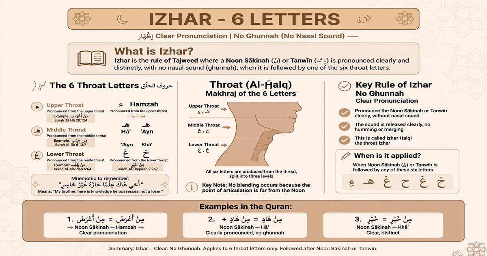

What Is Izhar? 6 Throat Letters

Izhar is one of the basic Tajweed rules related to Noon Sakinah and Tanween. The word Izhar means making something clear.
What Is Izhar?
Izhar means pronouncing the sound of Noon Sakinah or Tanween clearly when it is followed by one of the six throat letters.
The 6 Izhar Letters
The six letters of Izhar are letters that come from the throat:
Hamzah · Haa · Ayn · Haa · Ghayn · Khaa
Izhar Means a Clear Noon
When Noon Sakinah or Tanween is followed by one of the six Izhar letters, the Noon sound should be pronounced clearly. It is not merged into the following letter.
🔊 Clear Pronunciation
Izhar = Clear Noon
The Noon Sakinah or Tanween remains clear before the throat letter.
Does Izhar Have Ghunnah?
Izhar is different from Ikhfa and Idgham because the Noon sound is pronounced clearly rather than being hidden or merged. The natural nasal quality of Noon should not be extended as a separate two-count Ghunnah.
Izhar Examples from the Quran
Here are examples showing Noon Sakinah or Tanween followed by an Izhar letter:
مَنْ آمَنَ
مِنْهَا
How to Recognize Izhar
- Look for Noon Sakinah or Tanween.
- Look at the letter that comes immediately after it.
- If the letter is one of the six throat letters, Izhar applies.
- Pronounce the Noon or Tanween clearly.
- Do not merge or hide the Noon sound.
💡 Easy Way to Remember Izhar
Izhar = Clear. Remember the six throat letters: ء ه ع ح غ خ When Noon Sakinah or Tanween comes before one of these letters, pronounce the Noon sound clearly.
📚 Tajweed Series – 9 Rules
Continue learning Tajweed with the complete series:
Learn Quran and Tajweed Online
Want to improve your Quran recitation with a qualified teacher? Book a free trial lesson with Al Shimaa Quran Academy.